PROJECT OVERVIEW
MAPPA
一個以地點為索引，
讓朋友共同累積日常觀察與回憶的慢節奏社群。
- DESIGN CHALLENGE
- 社群讓資訊流動得更快，我們卻更少停下來看看身邊。
- CORE EXPERIENCE
- 觀察 → 確認地點 → 留下記錄 → 回看共同回憶
- ROLE
- Product Concept · UX Flow · UI Design · Design System · Front-end Demo
- STATUS
- 可操作 Demo · 核心假設待使用者驗證
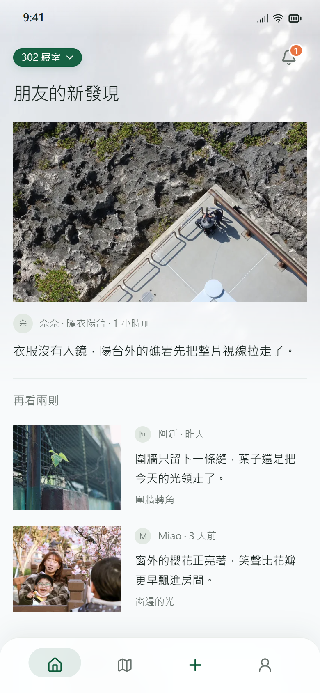
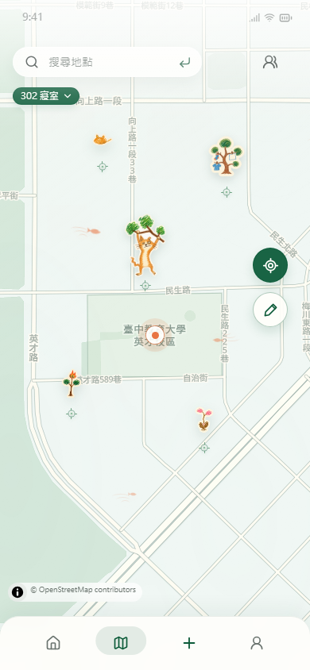
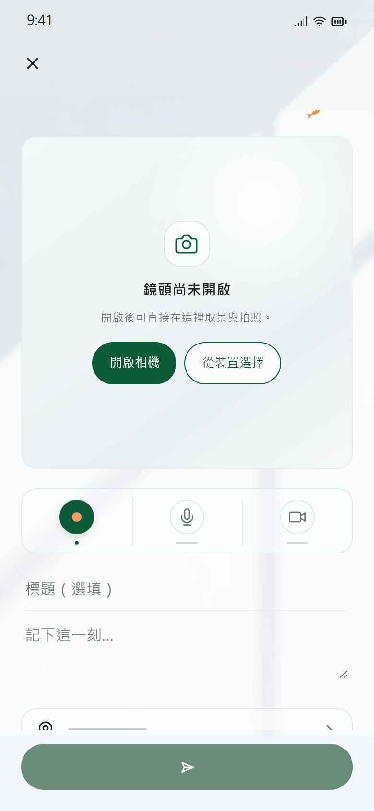
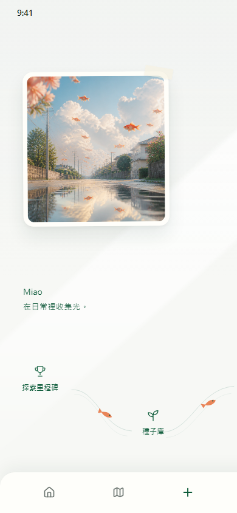
SCROLL · PRESS →
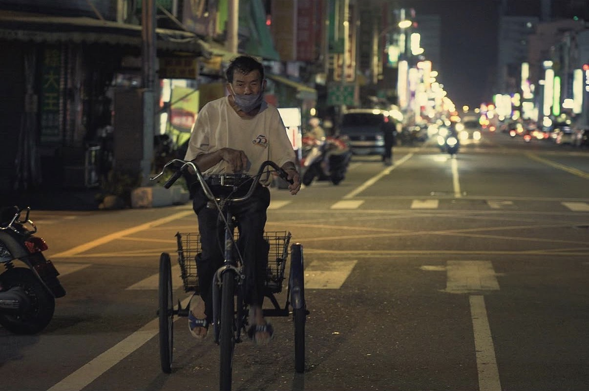
從一次次出門拍照開始
每個地方，
都存在人們生活的軌跡。
出門拍照時，為了尋找某個被快門捕捉的瞬間，我會放慢腳步、留意周遭。
那時我的眼中，不只是適合被拍下的畫面，而是每個人如何沿著自己的軌跡生活。
我想把這種暫時放下角色、目的與評價的觀察方式，帶進 MAPPA。
當分享越來越快，日常也更容易被略過。
許多社群透過連續內容、即時回饋與公開數字，填滿生活中的零碎時間。
即時更新
流量與曝光
公開回饋
我想探索另一種可能：如果社群不以爭取注意力為核心，反而鼓勵人慢下來、多看看身邊，會發生什麼？
MAPPA 的核心三原則
01 / SLOW DOWN
放慢
讓互動保有餘裕
不以人氣數字推動互動，不限制使用方式，也不因暫時離開而懲罰使用者。
02 / LOOK CLOSER
觀察
讓觀看先於產出
靈感提示可以略過；即使沒有記錄，觀察仍然有價值。
03 / LET IT GROW
累積
讓片段留在地點
以地點整理不同時間的觀察，讓日後的回看有所依。
MAPPA 必須是個安靜的空間，
但又不那麼平靜。
它帶著一點奇幻，吸引人重新觀察那些早已習以為常的事物。
透過與 AI 工具討論畫面調性、音樂與物件元素，把抽象的感受逐漸收束成具體的形象。
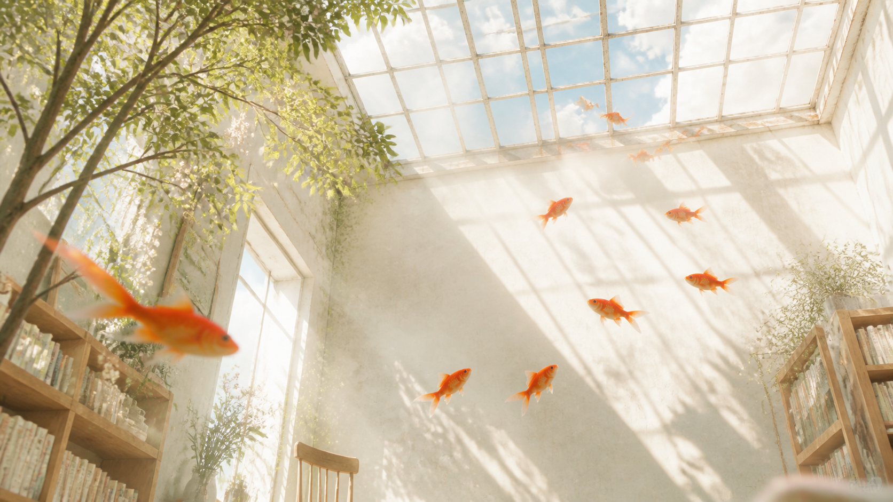
Mercy Christmas, Mr. Lawrence
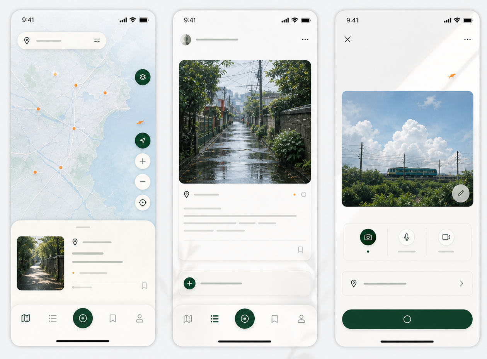
Site Map × 核心 User Flow
把核心任務集中在記錄、確認與回看。
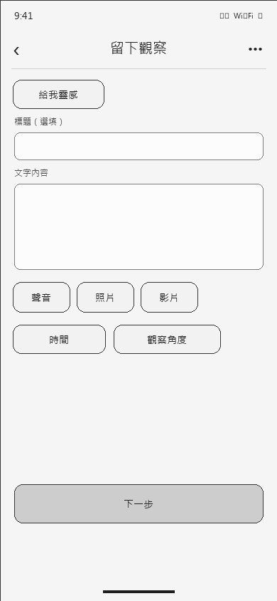
01 / 確認地圖與地點
帶入目前地圖與位置，再由使用者確認。
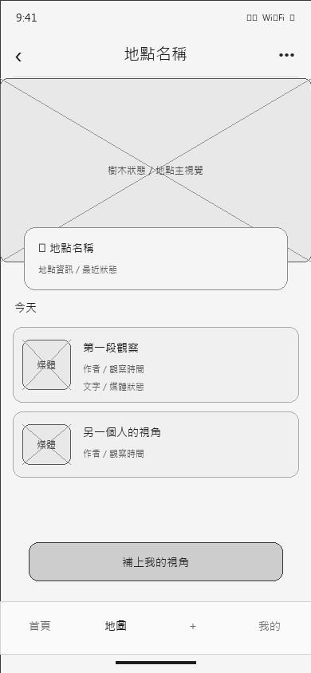
02 / 留下內容
文字、照片、聲音或影片，至少一種就能開始。
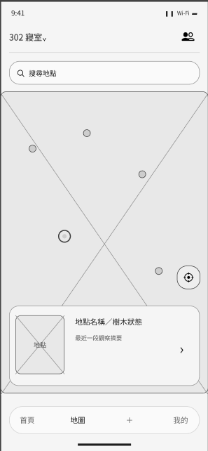
03 / 進入地點樹
發布後回到文章頁面，看看這個地點的更多故事。
從制式表單，調整成以觀察為起點的紀錄流程
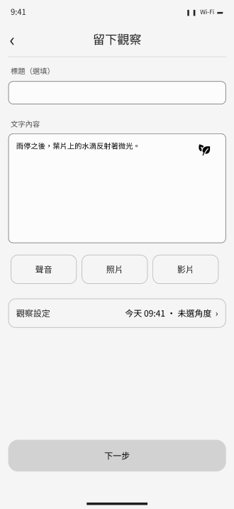
PROBLEM / 初版問題
所有欄位權重接近，
畫面更像是在填寫表單。
使用者不容易判斷第一步該做什麼，影像、文字與地點之間也缺少清楚的操作順序。
DESIGN DECISION / 設計調整
1放大媒體預覽讓剛記錄的片段先成為畫面焦點。
2收斂媒體入口將拍照、錄音與錄影整理成模式切換。
3重排操作順序依媒體、描述、地點與下一步往下完成。
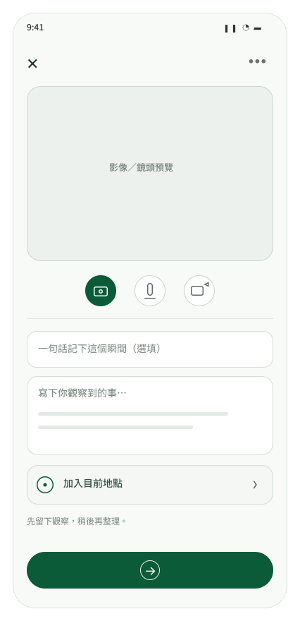
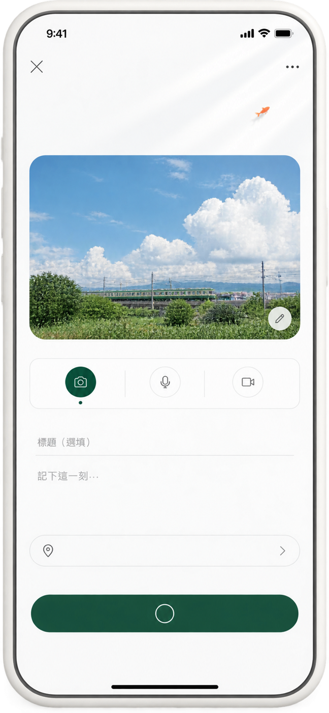
在反覆調整中，
逐漸形成一致的視覺語言
從色彩、文字到元件，每一個選擇都回到同一件事：讓介面安靜地承接觀察。
MAPPA DEMODesign System
設計總覽
品牌色
保留最具辨識度的三個顏色。
MAPPA 綠#0B5A38
節點橘#E87543
冷白#FFFEFA
文字角色
以使用情境命名，讓層級有明確位置。
頁面標題24 / 32 · Medium
文章標題18 / 24 · Medium
內文16 / 26 · Regular
操作文字14 / 21 · Medium
版面與元件尺寸
以 390 × 844 mobile viewport 為基準。
20px頁面留白
48px區塊間距
16 / 24px卡片圓角
48px控制項高度
44px最小點擊區
Full膠囊圓角
04
核心元件
留下觀察
從裝置選擇
寫下你觀察到的事⋯
首頁地圖＋我的
讓樹的成長回應觀察的累積
完成觀察成就，解鎖新的種子；持續留下有效觀察，讓它逐步長成回憶樹。
成就獎勵 · 新種子
01 / UNLOCK解鎖新種子
完成一項觀察成就，
獲得新的種子，記下探索里程碑。
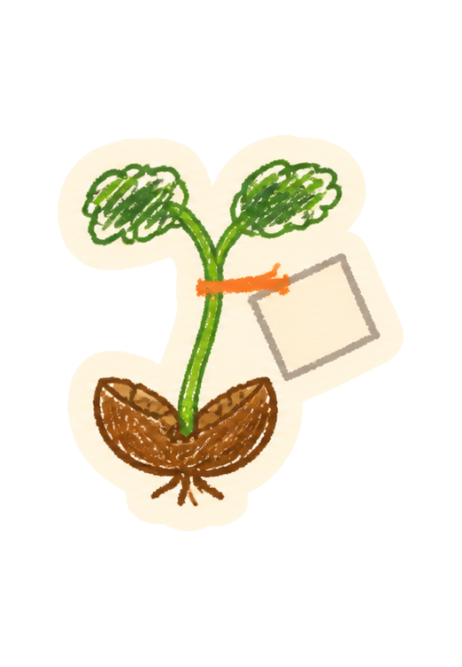
02 / GROW讓觀察使它發芽
持續記錄同一地點，
有效觀察讓零散片段逐漸連結。
長成回憶樹
觀察累積成可回望的故事，
成為朋友共同擁有的地方記憶。
DESIGN DECISION / 成長規則新種子回應探索成就，成長回應有效觀察。
完成觀察成就解鎖新的種子；之後只有持續留下有效觀察才會發芽、成長。留言與瀏覽保留交流價值，不形成排名。

下一步，確認人是否重新看見日常
Demo 已經可以被操作，但 MAPPA 是否真的讓人放慢腳步、開始觀察，仍需要透過真實使用來確認。
Demo 已完成，
核心假設尚待驗證。
目前能確認流程與視覺已成形；
還不能回答 MAPPA 是否真的改變了觀察方式。
01 觀察是否真的發生？
使用 MAPPA 後，人是否更願意停下來看看身邊？
02 記錄是否值得持續？
地點與共同回憶，是否能支持使用者繼續留下觀察？
METHOD / 任務測試 ・ 7–14 日使用日誌 ・ 訪談